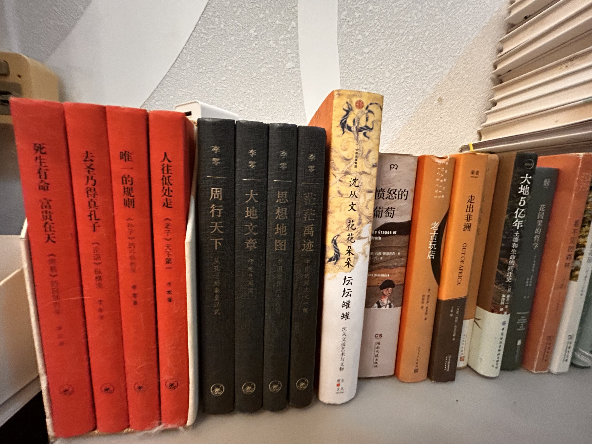

客厅左

- 死生有命富贵在天
- 去圣乃得真孔子
- 唯一的规则
- 人往低处走《老子天下第一》
- 李零 周行天下：从孔子到秦皇汉武
- 李零 大地文章：行走与阅读
- 李零 思想地图：中国地理的大视野
- 李零 茫茫禹迹：中国的两次大一统
- 沈从文 花花朵朵坛坛罐罐 沈从文谈艺术与文物
- 愤怒的葡萄 The Grapes of Wrath 约翰·斯坦贝克 湖南文艺出版社
- 老古玩店
- 走出非洲 OUT OF AFRICA
- 夜航西飞
- 大地五亿年：土壤和生命的跃迁史
- 花园里的哲学
共 15 本书，上传于 2026-10-04 10:25:15。